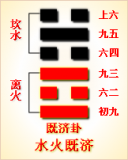

<!DOCTYPE html PUBLIC "-//W3C//DTD XHTML 1.0 Transitional//EN" "http://www.w3.org/TR/xhtml1/DTD/xhtml1-transitional.dtd">

<html xmlns="http://www.w3.org/1999/xhtml">
<head>
<meta content="text/html; charset=utf-8" http-equiv="Content-Type"/>
<title>周易第六十三卦：既济�?水火既济 坎上离下原文解释翻译-周易-国学�?/title>
<meta content="周易,既济�?水火既济,坎上离下" name="keywords"/>
<meta content="周易,既济�?水火既济,坎上离下，周易第六十三卦：既济卦 水火既济 坎上离下解释翻译�?（水火既济）坎上离下 《既济》：亨小，利贞。初吉终乱�?初九，曳其轮，濡其尾，无咎�?六二，「妇丧其茀，勿逐，七日得�?九三，高宗伐鬼方，三年克之，小人勿用�?六四，繻" name="description"/>
<link href="css.css" media="screen" rel="stylesheet" type="text/css"/>
</head>
<body>
<div class="gxlayout">
</div>
<div class="gxlayout">
<div class="ihead">
<div class="title"><a>周易</a></div>
<ul class="more fl">
<li>当前位置:<a>国学梦首�?/a> &gt; <a>国学经典</a> &gt; <a>经部</a> &gt; <a>四书五经</a> &gt; <a>周易</a> &gt;  周易第六十三卦：既济�?水火既济 坎上离下原文解释翻译</li>
</ul>
</div>
<div class="gxbl fl">
<div class="latitle">

<h1>周易第六十三卦：既济�?水火既济 坎上离下</h1>
<div class="lainfo"><span>作者：佚名</span> <span>全集�?a>周易</a></span> <span>来源：网�?/span> <span>[<a rel="nofollow" target="_blank">挑错/完善</a>]</span></div>
</div>
<div class="lacontent">
<div class="clearfix"></div>
<p style="text-align:center"></p>
<p style="text-align:center"><a>周易第六十三卦详�?/a></p>
<p style="text-align:center"><a>第六十三卦初九爻详解</a>　<a>第六十三卦六二爻详解</a>　<a>第六十三卦九三爻详解</a></p>
<p style="text-align:center"><a>第六十三卦六四爻详解</a>　<a>第六十三卦九五爻详解</a>　<a>第六十三卦上六爻详解</a></p>
<p><strong><a target="_blank">周易</a>第六十三�?既济 水火既济 坎上离下</strong></p>
<p>既济：亨，小利贞，初吉终乱�?/p>
<p>彖曰：既济，亨，小者亨也。利贞，刚柔正而位当也。初吉，柔得中也。终止则乱，其道穷也�?/p>
<p>象曰：水在火上，既济;君子以思患而预防之�?/p>
<p>初九：曳其轮，濡其尾，无咎。象曰： 曳其轮，义无咎也�?/p>
<p>六二：妇丧其茀，勿逐，七日得。象曰：七日得，以中道也�?/p>
<p>九三：高宗伐鬼方，三年克之，小人勿用。象曰：三年克之，惫也�?/p>
<p>六四�?纟需)有衣袽，终日戒。象曰：终日戒，有所疑也�?/p>
<p>九五：东邻杀牛，不如西邻之禴祭，实受其福。象曰：东邻杀牛，不如西邻之时�?实受其福，吉大来也�?/p>
<p>上六：濡其首，厉。象曰：濡其首厉，何可久也�?/p>
<p><strong><a href="63_既济�?html" target="_blank">既济�?/a>卦象，水火既济卦的象征意�?/strong></p>
<p>既济卦，这个卦是异卦相叠，下卦为离，上卦为坎。坎为水，离为火，水火相交，水在火上，水势压倒火势，完成了救火的任务。既，已�?济，成也。既济就是事情已经成功，但终将发生变故�?/p>
<p>既济卦位�?a href="62_小过�?html" target="_blank">小过�?/a>之后，《序卦》中这样解释道：“有过物者必济，故受之以既济。”矫正小的过失就可以获得成功，所以接着谈既济卦�?/p>
<p>《象》中这样解释本爻：水在火上，既济;君子以思患而预防之。这里指出：既济卦的卦象是离(�?下坎(�?上，为水在火上之表象，比喻用火煮食物，食物已熟，象征事情已经成功;君子应有远大的目光，在事情成功之后，就要考虑将来可能出现的种种弊端，防患于未然，采取预防措施�?/p>
<p>既济卦象征成功，启示的是盛极将衰的道理，此卦属于中上卦。《象》曰：金榜以上题姓名，不负当年苦用功，人逢此卦名吉庆，一切谋望大亨通�?/p>
<p>【既济卦卦象释义�?/p>
<p>此卦卦名为既济。既，就是成功、完成的意�?济，便是渡河的意思。既济合起来便是成功渡过的意思。《序卦传》中说：“有过物者必济，故受之以既济。”也就是说要想一直通过，必须要用舟渡河，所以小过卦的后面是既济卦�?/p>
<p>既济卦卦<a target="_blank">�?/a>：既济卦的卦画为三个阴爻三个阳爻，其排列方式完全符合阳奇阴偶的规则，表示事物最终的完美形态。其卦画的排列顺序与下面�?a href="64_未济�?html" target="_blank">未济�?/a>正好相反，既济卦与未济卦既互为覆卦，又互为旁通�?/p>
<p>既济卦卦象：从卦象上分析，既济卦上卦为水，下卦为火，水在火上就是既济卦的卦象�?/p>
<p>怎么水与火能代表成功渡过�?这其实正是《周易》中的大智慧�?/p>
<p>既济卦是六十四卦中最完美的一卦。首先，卦中坎水润下，离火炎上，水与火有相交之相。《周易》中宜交忌分，所以这是既济卦的完美之一。次，卦中阴阳爻各得其所，阳爻居于奇位，阴爻居于偶位，这是既济卦的完美之第三，卦中各爻都有相应相合者，没有一个爻处于孤立之中，这是既济卦的完美之三�?/p>
<p>关键词：周易,既济�?水火既济,坎上离下</p>
<div class="clearfix"></div>
<div class="title"><div class="thot">解释翻译</div><span>[挑错/完善]</span></div><p><a href="63_既济�?html" target="_blank">既济�?/a>，亨通，有小吉利的古问。开始吉利，结果会出现变故�?/p>
<p>初九，拉车渡河，打湿了车尾。没有灾祸�?/p>
<p>六二：妇人丢失了头巾，不用去找，七天内会失而复得�?/p>
<p>九三：殷高宗武丁讨伐鬼方国，用了三年才取胜。对小人不利�?/p>
<p>六四�?a target="_blank">冬天</a>穿的寒衣破烂不堪，整天心里惊恐不安�?/p>
<p>九五：殷人杀牛祭祝，不如周人春祭，周人确实得到了神的福佑�?/p>
<p>上六：过河时打湿了头部，危险�?/p>
<div class="title"><div class="thot">注释出处</div><span>[请记住我�?国学�?www.guoxuemeng.com]</span></div><p>①既济是本卦的标题。既的意思是已经，济的意思是渡水和成功、成就�?既济是说事已成功。全卦内容是讲事情成功的道理，与下一卦“未济”构�?组卦。标题取“济”的意义�?/p>
<p>②乱：变故�?/p>
<p>③茀(fu)：用作“禴”， 意思是头巾�?/p>
<p>(4)高宗：殷国君武丁，曾与周联手攻打北方强敌鬼方。鬼方：殷周时北方的国名，属于严允部落之一�?/p>
<p>⑤繻(ru)：意 思是御寒的衣服。袽(ru)：用作“絮”，指破烂的冬衣�?/p>
<p>(6)戒：用作 “骇”，意思是惊惧不安�?/p>
<p>(7)东邻：指殷人。西邻：指周人。禴(yue)祭古代祭名，指春祭�?/p>
<div class="clearfix"></div>
<div class="contextdhall clearfix">
<ul>
<li>上一篇：<a href="62_小过�?html">周易第六十二卦：小过�?雷山小过 震上艮下</a> </li>
<li>下一篇：<a href="64_未济�?html">周易第六十四卦：未济�?火水未济 离上坎下</a> </li>
<li>全   文�?a>周易</a></li>
</ul>
</div>
</div>
<div class="clearfix mt20"></div>
</div>
</div>
<div class="clearfix mt20"></div>
<div class="gxlayout">
</div>
<script>
var _hmt = _hmt || [];
(function() {
  var hm = document.createElement("script");
  hm.src = "https://hm.baidu.com/hm.js?872034ded637616c5cf8e173a446bb0e";
  var s = document.getElementsByTagName("script")[0];
  s.parentNode.insertBefore(hm, s);
})();
</script>
</body>
</html>
